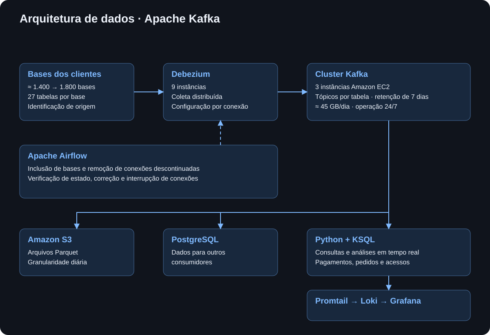

EXPERIÊNCIA PROFISSIONAL
Apache Kafka
Centralização de dados de clientes com Kafka e Debezium em tempo real.
Problema e objetivo
O projeto nasceu da necessidade de reunir os dados das bases dos clientes em um ponto central, permitindo análises em tempo real para apoiar a tomada de decisão. No início, a integração envolvia aproximadamente 1.400 bases, o que exigia uma estrutura capaz de organizar a coleta e preservar a identificação de cada origem. O Kafka foi adotado como ponto central desse fluxo, reunindo os dados que seriam utilizados nas análises e no acompanhamento da operação.
Arquitetura planejada
A arquitetura foi planejada com um cluster Kafka distribuído em três instâncias Amazon EC2 e o Debezium executado em nove instâncias. Essa distribuição buscava equilibrar a carga das conexões e da coleta, com capacidade para manter a operação diante de uma possível indisponibilidade de parte das instâncias. As tabelas equivalentes dos diferentes clientes compartilhavam os mesmos tópicos, enquanto cada mensagem mantinha a identificação da base de origem para que os registros pudessem ser distinguidos ao longo do processamento.
Os dados permaneciam no Kafka por 7 dias, período suficiente para que fossem processados e utilizados nas análises. Após esse prazo, as mensagens eram descartadas, liberando espaço para os dados mais recentes. A operação do fluxo era contínua, com coleta 24 horas por dia, sete dias por semana, e um volume médio de 45 GB de dados por dia.
Os dados eram enviados para o S3 em formato Parquet com granularidade diária, permitindo análises históricas e consultas de longo prazo. Além disso, os dados eram enviados para o PostgreSQL, onde ficavam disponíveis para outras formas de consumo.

Descrição e funcionamento
A coleta abrangia 27 tabelas de cada base de cliente. Os dados saíam dessas bases, passavam pelo Debezium e eram encaminhados aos tópicos correspondentes no Kafka, formando um fluxo que operava continuamente, 24 horas por dia, sete dias por semana. A identificação de origem acompanhava as mensagens para permitir a consolidação dos dados sem perder a associação com cada cliente.
Cada conexão era feita de forma automática com um arquivo JSON com mais de 260 linhas, reunindo parâmetros de conexão, regras de tratamento e padronização e ajustes dos identificadores dos registros. Essa configuração organizava a entrada dos dados no fluxo central e definia como as informações de cada base seriam tratadas antes de serem utilizadas nas etapas seguintes.
Manutenção
Fui responsável pela configuração das instâncias e dos softwares utilizados no projeto, além do desenvolvimento dos códigos executados no Airflow para apoiar a manutenção preventiva. A operação exigia acompanhar a disponibilidade das conexões e as mudanças no conjunto de clientes atendidos, incluindo a entrada de novas bases, a retirada de bases descontinuadas e a verificação das conexões existentes. Esse acompanhamento orientava as ações necessárias para manter a estrutura de coleta alinhada ao ambiente em operação.
Automação da operação
As rotinas executadas no Airflow automatizavam a inclusão de novas bases, a remoção de conexões de bases descontinuadas e a verificação do estado das conexões ativas. Conforme a situação identificada, os códigos executavam ações de correção ou interrompiam conexões em condições críticas. A automação foi desenvolvida com foco preventivo, para acompanhar as mudanças das bases e tratar os problemas de conexão dentro da própria rotina operacional.
Evolução
Após um ano de projeto, o ambiente havia passado de aproximadamente 1.400 para cerca de 1.800 bases conectadas. Nesse período, não foram observados sinais de sobrecarga no sistema. Esse crescimento permitiu acompanhar o comportamento da estrutura diante do aumento de conexões e da continuidade da coleta no dia a dia. Não foi necessário realizar ajustes na arquitetura, o que indicou que a distribuição das instâncias e a configuração do fluxo estavam adequadas para o volume de dados e a quantidade de conexões.
Análise de dados
Os dados dos tópicos eram consultados com KSQL e analisados em tempo real por rotinas em Python. O fluxo de acompanhamento também utilizava Promtail e Loki para disponibilizar informações no Grafana, onde eram monitoradas situações como falhas de pagamento, aumentos de pedidos fora do padrão e volumes de acesso atípicos. Dessa forma, os dados centralizados apoiavam tanto as análises quanto a identificação de eventos que exigiam atenção da operação.